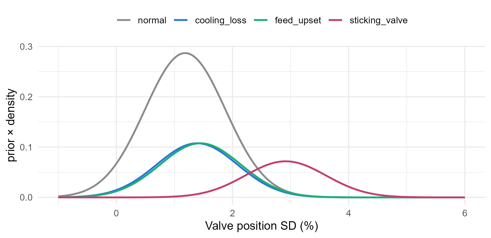

Module 7 · Lesson 5 of 14 Week 108 of 160 About 5–7 hours
Discriminant analysis and naive Bayes
Model each class, then let Bayes’ theorem decide
Classify reactor alarms the other way round: model what each cause’s measurements look like, and turn those models into probabilities with Bayes’ theorem. Do it by hand for one measurement, then compare linear and quadratic discriminant analysis and naive Bayes on all six, see why the sticking valve needs QDA, what correlated measurements do to naive Bayes, and how the prior probabilities shift the balance between missed faults and false alarms.
Logistic regression models P(Y = k \mid x) directly: given the measurements, how likely is each cause? That’s a discriminative model. There’s another way round. Model what the measurements look like for each cause, f_k(x), which is often natural for an engineer (“a sticking valve makes the valve hunt, so its SD is high”), and how common each cause is, \pi_k. Then Bayes’ theorem turns them into the probabilities you want:
P(Y = k \mid X = x) = \frac{\pi_k f_k(x)}{\sum_{l=1}^K \pi_l f_l(x)} .
That’s a generative model: it describes how the data for each class are generated. This lesson covers the three classic generative classifiers. They differ only in what they assume about f_k: linear discriminant analysis (LDA), which you met in Module 3, quadratic discriminant analysis (QDA), and naive Bayes.
Generative classifiers think like a detective: “if it were a sticking valve, what would I expect to see?” Then they compare that with what they actually see.
In this lesson you’ll:
- compute LDA’s posterior probabilities by hand, for one measurement
- fit LDA, QDA and naive Bayes with
MASS::lda(),MASS::qda()ande1071::naiveBayes(), and cross-validate them - see why unequal spreads call for QDA
- see what correlated predictors do to naive Bayes
- change the prior probabilities, and watch the errors move
- count the parameters each method has to estimate
One measurement, by hand
LDA assumes that, within each class, X is normal, with a mean \mu_k of its own and a variance \sigma^2 shared by every class. The setup code reads the alarms and makes the same 10 folds as Lesson 4.
Your turn. Using the valve’s SD alone, estimate each cause’s prior probability (its share of the alarms), its mean, and the pooled within-class variance. Then use Bayes’ theorem to find the probability of each cause for an alarm with a valve SD of 2.5%.
The normal density’s SD is the square root of the pooled variance, s2.
x <- faults$valve_sd_pct
prior <- prop.table(table(faults$cause))
mu <- tapply(x, faults$cause, mean)
s2 <- sum(tapply(x, faults$cause, function(v) sum((v - mean(v))^2))) / (800 - 4)
num <- prior * dnorm(2.5, mean = mu, sd = sqrt(s2))
num / sum(num)35% sticking valve, 28% normal, 20% feed upset and 17% cooling loss. A valve SD of 2.5% is far above the normal mean (1.18%) and below the sticking valve’s (2.91%). The sticking valve wins, but only narrowly, for two reasons: it’s the rarest cause (a prior of 1/8), and the pooled SD, 0.70, is wide enough to make 2.5% plausible for every class. The pooled variance divides by n - K, just as a one-way ANOVA’s error mean square does.
Here’s the picture: each cause’s normal curve, scaled by its prior. Where a curve is on top, that cause is the most probable.
x <- faults$valve_sd_pct
prior <- prop.table(table(faults$cause)); mu <- tapply(x, faults$cause, mean)
s <- sqrt(sum(tapply(x, faults$cause, function(v) sum((v - mean(v))^2))) / 796)
g <- expand.grid(x = seq(-1, 6, by = 0.02), cause = levels(faults$cause))
g$y <- prior[g$cause] * dnorm(g$x, mu[g$cause], s)
ggplot(g, aes(x, y, color = cause)) + geom_line(linewidth = 0.9) +
scale_color_manual(values = cols, name = NULL) +
labs(x = "Valve position SD (%)", y = "prior × density") +
theme_minimal(base_size = 12) + theme(legend.position = "top")
#> Don't know how to automatically pick scale for object of type <table>.
#> Defaulting to continuous.
Your turn. Check your answer with MASS::lda().
Predict at a valve SD of 2.5.
fit <- MASS::lda(cause ~ valve_sd_pct, data = faults)
predict(fit, data.frame(valve_sd_pct = 2.5))$posteriorThe same four probabilities, to every digit. lda() estimates the priors, the means and the pooled variance exactly as you did. With one predictor and a shared variance, the log of \pi_k f_k(x) is linear in x (the x^2 terms are the same for every class and cancel), which is where the “linear” in LDA comes from.
LDA with all six measurements
With p predictors, LDA assumes each class is multivariate normal, N(\mu_k, \Sigma), with its own mean vector and a covariance matrix \Sigma shared by all the classes. The boundaries between classes are still straight: lines, planes or hyperplanes. It’s the same LDA as Module 3’s, used here as a classifier.
Your turn. Cross-validate LDA on all six measurements.
predict() on an LDA fit returns a list; the predicted classes are in $class.
f6 <- reformulate(vars, response = "cause")
pred <- factor(rep(NA, 800), levels = levels(faults$cause))
for (j in 1:10) {
fit <- MASS::lda(f6, data = faults[fold != j, ])
pred[fold == j] <- predict(fit, faults[fold == j, ])$class
}
print(table(predicted = pred, actual = faults$cause))
mean(pred != faults$cause)18.25% wrong, better than multinomial logistic regression (20.1%) on the same folds. Both have linear boundaries, so why the difference? When the classes really are close to normal, LDA uses that knowledge, and its estimates are more efficient. Logistic regression assumes less, and when the normality assumption is badly wrong, it’s the safer choice. But the sticking valve is still a problem: only 54 of 100 are recognized.
Unequal spreads: QDA
LDA’s shared covariance matrix is a strong assumption. Is it true here?
Your turn. Find the SD of each measurement within each cause.
Apply sd to each column.
sds <- sapply(split(faults[vars], faults$cause), function(d) apply(d, 2, sd))
round(sds, 2)For the first three causes, the SDs are similar. For the sticking valve, every measurement is about twice as spread out: the valve’s SD has an SD of 1.55, against 0.42 to 0.51 for the others, and its position 16.8 against 7 to 9. A sticking valve doesn’t just shift the measurements; it makes them erratic. A shared covariance matrix can’t describe that.
QDA gives each class its own covariance matrix, N(\mu_k, \Sigma_k). Then the x^\top \Sigma_k^{-1} x terms no longer cancel, and the boundaries become quadratic curves.
Your turn. Cross-validate QDA.
The function is MASS::qda().
f6 <- reformulate(vars, response = "cause")
pred <- factor(rep(NA, 800), levels = levels(faults$cause))
for (j in 1:10) {
fit <- MASS::qda(f6, data = faults[fold != j, ])
pred[fold == j] <- predict(fit, faults[fold == j, ])$class
}
print(table(predicted = pred, actual = faults$cause))
mean(pred != faults$cause)15.6% wrong: the best so far. The gain is almost all in the sticking valve: 78 of 100 recognized, against LDA’s 54. QDA wraps a wide boundary around the sticking valve’s wide cloud, and narrow ones around the others.
The boundaries, in two of the six dimensions:
grid2 <- expand.grid(temp_dev_C = seq(-3, 5, length.out = 160), valve_sd_pct = seq(0, 8, length.out = 160))
f2 <- cause ~ temp_dev_C + valve_sd_pct
reg <- rbind(cbind(grid2, cause = predict(lda(f2, faults), grid2)$class, method = "LDA: straight boundaries"),
cbind(grid2, cause = predict(qda(f2, faults), grid2)$class, method = "QDA: curved boundaries"))
ggplot(reg, aes(temp_dev_C, valve_sd_pct)) +
geom_raster(aes(fill = cause), alpha = 0.35) +
geom_point(data = faults, aes(color = cause), size = 0.6) +
scale_fill_manual(values = cols, name = "Cause") + scale_color_manual(values = cols, guide = "none") +
facet_wrap(~method) + coord_cartesian(xlim = c(-3, 5), ylim = c(0, 8), expand = FALSE) +
labs(x = "Temperature deviation (°C)", y = "Valve position SD (%)") +
theme_minimal(base_size = 11) + theme(legend.position = "top")![Two panels of decision regions for the alarm causes, with temperature deviation on the horizontal axis and valve position SD on the vertical axis. LDA's regions, on the left, are separated by straight lines; the sticking valve region is a band across the top, above a valve SD of about 2.5 to 3. QDA's regions, on the right, are separated by curves; the normal region is a compact oval around the origin, and the sticking valve region wraps around everything else, covering the top and the far left and right edges.](05-generative-classifiers_files/figure-html/unnamed-chunk-16-1.png)
QDA’s flexibility has a price: a covariance matrix for every class. The challenge round counts the parameters. With few data per class and many predictors, QDA’s extra variance can cost more than its lower bias gains, the same trade-off as in Lesson 1.
Naive Bayes
Estimating a full covariance matrix for each class takes a lot of data. Naive Bayes makes the opposite simplification: within each class, the predictors are independent. Then each class’s density is a product of one-dimensional densities,
f_k(x) = f_{k1}(x_1) \times f_{k2}(x_2) \times \cdots \times f_{kp}(x_p),
and each f_{kj} is easy to estimate, from a normal distribution, a histogram or a kernel density, or a table of frequencies for a categorical predictor. That makes naive Bayes cheap, stable with many predictors, and happy with mixed types. The independence is almost never true, which is why it’s “naive”, but naive Bayes often classifies well anyway.
Your turn. Cross-validate e1071::naiveBayes(), which uses a normal density for each numeric predictor.
Predict the held-out fold, faults[fold == j, ]. For naive Bayes, predict() returns the classes directly.
f6 <- reformulate(vars, response = "cause")
pred <- factor(rep(NA, 800), levels = levels(faults$cause))
for (j in 1:10) {
fit <- e1071::naiveBayes(f6, data = faults[fold != j, ])
pred[fold == j] <- predict(fit, faults[fold == j, ])
}
mean(pred != faults$cause)17.9% wrong: better than LDA (18.25%), though not as good as QDA (15.6%). Naive Bayes gets each class’s own spread for each measurement, which is what helped QDA, but it ignores every correlation. Here that trade comes out in between.
The temperature and pressure deviations are correlated at 0.87 within every class: they carry nearly the same information. Naive Bayes multiplies their densities as if they were independent, so it counts that information twice.
Your turn. Cross-validate naive Bayes again without the pressure deviation.
Drop "pressure_dev_bar".
f5 <- reformulate(setdiff(vars, "pressure_dev_bar"), response = "cause")
pred <- factor(rep(NA, 800), levels = levels(faults$cause))
for (j in 1:10) {
fit <- e1071::naiveBayes(f5, data = faults[fold != j, ])
pred[fold == j] <- predict(fit, faults[fold == j, ])
}
mean(pred != faults$cause)17.25%: removing a measurement made naive Bayes better. With both, the temperature evidence was counted twice, which made the model overconfident about anything that runs hot. LDA and QDA estimate the correlation and aren’t fooled: dropping pressure changes their errors by less than 1 point. For naive Bayes, it pays to leave out near-duplicate predictors, or to combine them first.
Here’s the scoreboard so far, all on the same 10 folds:
| Method | CV error | Sticking valves recognized |
|---|---|---|
| kNN, k = 9 (Lesson 3, other folds) | 20.1% | |
| Multinomial logistic regression | 20.1% | 52 of 100 |
| Multinomial, with squared terms | 16.9% | |
| LDA | 18.25% | 54 of 100 |
| Naive Bayes | 17.9% | |
| QDA | 15.6% | 78 of 100 |
NoteGo deeper: when does each method win?
All three generative methods compute \log \pi_k f_k(x) and pick the largest. With normal f_k:
- LDA: \delta_k(x) = x^\top \Sigma^{-1}\mu_k - \tfrac12 \mu_k^\top \Sigma^{-1} \mu_k + \log \pi_k, linear in x.
- QDA: \delta_k(x) = -\tfrac12 \log|\Sigma_k| - \tfrac12 (x - \mu_k)^\top \Sigma_k^{-1}(x - \mu_k) + \log \pi_k, quadratic in x.
- Naive Bayes: QDA with every \Sigma_k forced to be diagonal.
So naive Bayes and LDA are both special cases of QDA, simplified in different directions. LDA keeps the correlations but forces equal spreads; naive Bayes allows unequal spreads but drops the correlations. Which simplification costs less depends on the data. With p large and n small, both beat QDA, because QDA’s Kp(p+1)/2 covariance parameters are estimated badly. ISLR’s section 4.5 compares all of these, and logistic regression and kNN, in six simulated scenarios. A further fact: LDA’s log-odds between two classes are linear in x, exactly the form of logistic regression. The two differ only in how the coefficients are estimated.
Priors and the cost of mistakes
The priors \pi_k come from the training data unless you say otherwise: half the alarms are false, so “normal” starts with a big advantage. But the costs of mistakes aren’t equal. Calling a real fault “normal” means nobody acts on it; calling a false alarm a fault means an operator checks something that was fine.
Your turn. Cross-validate LDA with equal priors for the four causes, and count the real faults that are called “normal”, compared with the default priors.
Equal priors for four classes: rep(0.25, 4).
f6 <- reformulate(vars, response = "cause")
missed <- function(prior) {
pred <- factor(rep(NA, 800), levels = levels(faults$cause))
for (j in 1:10) {
fit <- if (is.null(prior)) MASS::lda(f6, data = faults[fold != j, ]) else MASS::lda(f6, data = faults[fold != j, ], prior = prior)
pred[fold == j] <- predict(fit, faults[fold == j, ])$class
}
c(error = mean(pred != faults$cause), faults_called_normal = sum(pred == "normal" & faults$cause != "normal"))
}
rbind(default = missed(NULL), equal = missed(rep(0.25, 4)))With the default priors, 85 real faults are called “normal” and the error rate is 18.25%. With equal priors, only 47 are missed, but the error rate rises to 21%, because 71 false alarms are now diagnosed as faults, against 28 before. The overall error rate treats every mistake as equally bad, and it’s often the wrong measure. Lesson 6 makes this precise, with costs and thresholds.
Challenge round
Challenge 1 · Counting parameters. How many parameters do LDA and QDA estimate for these data, with K = 4 classes and p = 6 predictors? Count the means and the covariance entries (a p \times p covariance matrix has p(p+1)/2 distinct entries), and leave out the priors.
QDA has a covariance matrix for each of the K classes.
K <- 4
p <- 6
c(LDA = K * p + p * (p + 1) / 2,
QDA = K * p + K * p * (p + 1) / 2)45 for LDA and 108 for QDA. With 100 sticking-valve alarms, estimating that class’s 21 covariance entries is fine. With 50 predictors, QDA would need 4 \times 1{,}275 = 5{,}100 covariance entries, and each class’s matrix would need more observations than predictors just to be invertible. Naive Bayes needs only 2Kp = 48 here (a mean and an SD per class and predictor), and 400 with 50 predictors.
Challenge 2 · LDA as a map. With K classes, LDA’s information lies in at most K - 1 directions, the linear discriminants, which Module 3 used to plot the classes. Find how much of the between-class separation each of the three discriminants carries.
The proportions are the squared singular values over their sum: fit$svd^2.
fit <- MASS::lda(reformulate(vars, "cause"), data = faults)
fit$svd^2 / sum(fit$svd^2)46%, 31% and 23%. All three directions matter: the four causes differ from each other in three different ways, so no single direction, and no two-dimensional plot, separates them all. fit$scaling holds each direction’s coefficients (multiply them by each measurement’s within-class SD to compare their weights), and plot(fit) draws the alarms on the first two.
Quick quiz
1. What makes a classifier “generative”?
Logistic regression, which models P(Y \mid X) directly, is discriminative.
2. What does LDA assume that QDA doesn’t?
Both assume normality. QDA gives each class its own covariance matrix.
3. Why did QDA beat LDA on the alarms?
With few data per class or many predictors, QDA’s extra parameters can make it worse.
4. What does naive Bayes assume?
Its density for each class is a product of one-dimensional densities.
5. Dropping the pressure deviation made naive Bayes better. Why?
LDA and QDA estimate the correlation, so they weren’t affected.
6. Making the priors equal raised the error rate. Was it a mistake?
The error rate treats every mistake as equally costly. Lesson 6 deals with unequal costs.
Wrap-up
You can now classify by modeling each class. Here’s what you’ve learned:
- Generative classifiers model \pi_k and f_k(x), then apply Bayes’ theorem. With one measurement, LDA by hand matched
lda()exactly. - LDA assumes normal classes with a shared covariance: linear boundaries, 18.25% wrong on the alarms.
- QDA gives each class its own covariance: quadratic boundaries, and 15.6% wrong, because the sticking valve’s measurements are about twice as spread out. It estimates 108 parameters to LDA’s 45.
- Naive Bayes assumes independent predictors within each class: cheap and robust, 17.9% wrong, but it double-counts correlated predictors. Dropping pressure improved it.
- Priors shift the balance between kinds of mistakes: equal priors missed 47 faults instead of 85, with more false alarms.
TipPractice in RStudio (optional, about an hour)
Download process_faults.csv into your project’s data-raw/ folder.
- Check normality. Make Q-Q plots of each measurement within each cause. Which are clearly not normal? (The valve’s SD can’t be negative.) Try LDA and QDA on
log(valve_sd_pct). - Kernel naive Bayes. The naivebayes package’s
naive_bayes(..., usekernel = TRUE)estimates each f_{kj} with a kernel density. Does it beat the normal version? - Regularized discriminant analysis.
klaR::rda()blends LDA and QDA, with a tuning parameter \lambda between them. Find the best \lambda by cross-validation. - Plot LD1 against LD2, colored by cause. Which causes overlap?
NoteKey words from this lesson
- Generative classifier
- A classifier that models the distribution of the predictors within each class, and the classes’ prior probabilities, and combines them with Bayes’ theorem.
- Discriminative classifier
- A classifier that models P(Y \mid X) directly, like logistic regression.
- Prior probability
- \pi_k, the probability of class k before seeing the predictors.
- Posterior probability
- P(Y = k \mid X = x), the probability of class k given the predictors.
- Linear discriminant analysis (LDA)
- A generative classifier that assumes multivariate normal classes with a shared covariance matrix, giving linear boundaries.
- Quadratic discriminant analysis (QDA)
- Like LDA, but with a separate covariance matrix for each class, giving quadratic boundaries.
- Naive Bayes
- A generative classifier that assumes the predictors are independent within each class.
- Linear discriminants
- The at most K - 1 directions in which LDA separates the classes.
NoteWant to read more?
- James, Witten, Hastie and Tibshirani, An Introduction to Statistical Learning (2nd edition), sections 4.4 and 4.5, “Generative Models for Classification” and the comparison of classification methods.
- Hastie, Tibshirani and Friedman, The Elements of Statistical Learning, section 4.3, including regularized discriminant analysis.
- David Hand and Keming Yu, “Idiot’s Bayes: Not So Stupid After All?”, International Statistical Review 69(3), 2001, doi:10.1111/j.1751-5823.2001.tb00465.x. Why naive Bayes works better than its assumptions deserve.